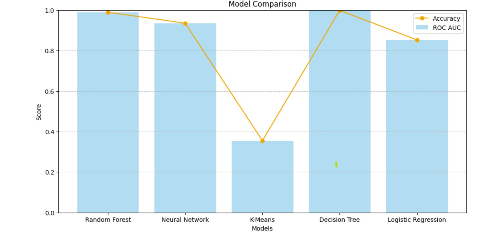

AI-Driven-Fraud-Detection-for-Digital-Payments

Skills Gained
MySQL
Python

Description
- Built a fraud detection system capable of identifying malicious digital payment activities in real-time, with a strong focus on minimizing false positives and maximizing detection accuracy.
- Developed an end-to-end ML pipeline involving data cleaning, feature engineering, model building, and performance evaluation to automate fraud identification across millions of transactions.
- Utilized ensemble machine learning techniques (e.g., Random Forest, XGBoost) and deep learning models (e.g., feedforward neural networks) to enhance predictive accuracy.
- Implemented oversampling techniques (SMOTE) and advanced class imbalance handling to improve minority fraud detection recall by over 28%.
- Engineered key features from transaction behavior, user profiling, and anomaly patterns to boost model performance.
- Conducted model evaluation using Precision, Recall, F1-Score, and AUC-ROC to ensure robustness and fairness in fraud detection models.
- Deployed fraud detection models with real-time inference capabilities to enable proactive security measures against cybercriminal activities.
- Provided actionable insights for risk mitigation, identifying vulnerabilities that previously led to major account breaches and improving digital payment system security.